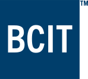

Kayden's Website
I am currently a student at BCIT in the CST program.
My primary interests include music (performance, analysis, composition), soccer, theology/christianity, and programming,
but my range of interests expands far beyond that. I enjoy analysing linguistics and etymologies, psychological or sociological phenomena,
and the reasoning behind certain design choices (whether visual or functional). For a job, I would love to land in the game dev scene,
working to create games that will draw users in simply because the game is enjoyable, and not because of gambling or exploitive techniques.
If I can spend my time improving people's lives, I count that as a victory.
Course List
- COMP1712 Biz Analysis and System Design
-
Business Analysis and Systems Design is the study of concepts, processes and tools that professionals use to plan and develop
information systems to industry standards. Students learn how to ask implicit questions, to create and document communication plans
and to make better decisions prior to creating a software system. Beginning with an introduction to the
Software Development Life Cycle (SDLC), students work in teams to initiate the system process, analyze problems,
discover requirements and create a logical design. Topics include: techniques used in the discovery of business requirements,
traditional approaches to data and process modelling, entity-relationship diagrams, and an introduction to relational database normalization.
Agile life cycles such as Scrum are also introduced and compared to more planned life cycles such as waterfall.
By the end of this course, successful participants will be able to use tools and methods commonly used in industry to
analyze, design, and implement information systems as confirmed by a term project.
- COMP1930 Projects 1
-
Students learn to work in a collaborative environment and complete a small-scale software project: a web app.
Design and managing of implementation concepts will be introduced: User Experience Design (XSD) and Agile methodology.
The course takes students through the UX design process which includes creating and administering surveys & interviews,
creating personas and user stories, designing wireframes, and performing user tests with a developed implementation that is
based on the UX design process. Students will use the Agile methodology to manage the software process.
Software management workflow also includes using version control, version control basics, utilizing web technologies
(JavaScript, CSS, HTML, data persistence via NoSQL data technologies). Some of the JavaScript topics include DOM manipulation,
event handling, web storage, AJAX calls and using JQuery in order to create a rich web app.
BCIT Website:

Some fun comics: